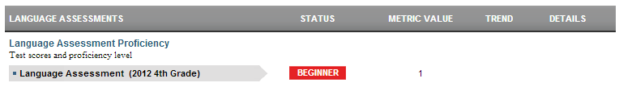

Dashboard Metrics


Language Assessment Proficiency
Background
Student Dashboard Metrics
English Language Learners (ELL) are an important and large segment of the school aged population. The Language Assessment Proficiency metric indicates Language Assessment Proficiency scores and corresponding language levels for ELL students. Moreover, in focus groups with educators, the Language Assessment Proficiency metric was repeatedly called out as necessary for classroom educators.
Primary Metric
- Language Assessment Proficiency: student's score on Language Assessment Proficiency with historical comparison.
Related Metrics
- Subject Area Grades: grades for each of the subject areas.
- Class Grades – Failing: the number of courses with failing grades out of total courses taken at the end of each grading period, with a trend comparison to the student’s course failures as of the prior grading period.
- Class Grades - # of Course Grades Dropping 10% or More: the number of courses out of total taken for which the student’s most recent course grade is dropping 10% or more from the prior grading period, with a trend comparison to the student’s course declines as of the prior grading period.
- Class Grades Below C Level: the number of courses for which the student’s most recent course grade is below C (70%), with trend comparison to the student’s courses below C for the prior grading period.
Proficiency Definitions
Beginning level of English language proficiency—Students who receive this rating are in the early stages of learning English. These students have a small vocabulary of very common words and little ability to use English in academic settings. These students often communicate using English they have memorized.
Intermediate level of English language proficiency—Students who receive this rating are able to use common, basic English in routine academic activities but need considerable English-language support to make learning understandable. Socially, these students are able to communicate simply about familiar topics and are generally able to understand conversations but may not comprehend all the details.
Advanced level of English language proficiency—Students who receive this rating are able to use academic English in classroom activities when given some English-language support. In social situations, these students can understand most of what they hear but have some difficulty with unfamiliar grammar and vocabulary.
Advanced High level of English language proficiency—Students who receive this rating are able to use academic English in classroom activities with little English-language support from others, even when learning about unfamiliar material. Students at this level have a large enough vocabulary in English to communicate clearly and fluently in most situations.
User Interface
Dashboard Example
Figure 1 shows the Language Assessment Proficiency metric as seen on the student dashboard.

Figure 1 Ed-Fi Language Assessment Proficiency Metric
Status Definition
This metric provides information on the level of English the student has learned. A student's Language Assessment Proficiency score is based on listening and reading scores, each of which is converted to a number between 1 and 4 (proficiency levels) and averaged. See Table 5 on this page for the exact calculation. For a definition of proficiency levels, see the Appendix on this page.
The Status and Status indicators are determined by the composite score. The student's composite score is displayed in the Value column.
Table 2 lists the Status indicators as seen on the student dashboard.
Metric Indicator | Trend Comparisons | |||
| Metric Name | Sub-metric Name | Metric Status Indicator | Compares: | To: |
Language Assessment Proficiency | not applicable | Red (Proficiency Level) = If student proficiency is Beginner or Intermediate AND grade level is greater than 4 OR if the proficiency level is less than Advanced High AND the grade level is 10 or higher Green (Proficiency Level) = If the proficiency level is Beginner or Intermediate for grades PK-3 OR proficiency level is greater than Intermediate for grades 4 or higher OR proficiency level is Advanced High AND grade level is 10 or higher N/A = no score exists | Current year | Prior year |
Trend Definition
The objective of trends is to increase the number of students advancing in their knowledge of English.
Trend Indicators: Objective is to indicate Language Assessment Proficiency | |||
| Up green | If the score for the current assessment is one or more levels greater (beginner to intermediate to advanced to advanced high) than previous assessment | |
| Unchanged | If the score for the current assessment is the same level as previous assessment | |
| Down red | If the score for the current assessment is one or more levels less (advanced high to advanced to intermediate to beginner) than the previous assessment | |
Periodicity
Best practice is to load the data for this metric at least annually prior to the beginning of the school year. Given that Language Assessment Proficiency are administered in the spring time, the data does not need to be uploaded monthly.
Recommended Load Characteristics | |
Calendar | Spring Semester |
Frequency of data load | Spring |
Latency | Yearly |
Interchange schema | Interchange-StudentAssessment.xsd |
Tooltips
The standard tool tips for the metric definition, column headers, and help functions display for this metric.
 is ‘No change from the prior period'
is ‘No change from the prior period' is ‘Getting worse from the prior period’
is ‘Getting worse from the prior period’ is 'Getting better from the prior period'
is 'Getting better from the prior period'
Business Rules
The Language Assessment Proficiency metric addresses Language Assessment Proficiency examinations.
Data Assumptions
- The student data is loaded into the Ed-Fi.
- Transfer students (late enrollment) who do not have complete transcripts are indicated.
Computed Values
Table 5 defines how values are calculated for this metric. The result of the calculation displays in the Value column on the student dashboard.
Metric Values | ||
English Language Learner | ||
Language Assessment Proficiency | Composite Score, derived by converting the student's listening and reading ratings to a number from 1 (Beginning) to 4 (Advanced High) and taking the average of the two numbers. | |
Data Anomalies
Data Anomalies
The best practice is to footnote to address these anomalies:
- Late enrollees may have taken assessment examinations tests at their previous school.
- Students that do not have social security numbers.
Footnotes
Footnotes are used to provide addition data information concerning the metric. Footnotes are sequential for the entire page. Therefore, a metric's footnote may not begin with the number 1.
The following footnotes appear below the metric:
- Transfer students with an incomplete transcript should be noted.
Date of Refresh
Best practice is for the date of last data refresh to appear next the metric in the following format:
- (Through April 2010) - container level
- (2009) - granular level for elementary school
Implementation Considerations
Student Identity
Maintaining a correct and consistent student identity is at the center of any education data system. Most systems use some sort of unique identifier. However, sometimes this identifier is entered incorrectly or sometimes different systems use different identifiers.
The UDM XML supports the interchange of multiple types of identifiers. The StudentReference is a complex type within the UDM to maintain the referential integrity of the student (that is, ensuring that the data associated with each student is accurately associated with the right student). The complex type of the student reference assists with implementing the accurate matching algorithm to identify a student by utilizing any of the individual attributes (e.g., Student Unique State ID, Student ID, Campus Local ID (with Campus ID), Name and Birth Date). For example, if the Student Unique State ID is unknown, you can find the student’s identity by their Student ID, First Name, Last Name and Birth Date.
Apparent Non-Participation
Assuming that the district has received and loaded timely test result data from Language Assessment Proficiency, students who did not participate in the test can be identified by the report comments. Table 6 explains the report comments.
Report Comment | Definition of Code |
EC = EXTENUATING CIRCUMSTANCES | Student could not be rated because of extenuating circumstances. |
- - - NO RATING / INFORMATION AVAILABLE | Student did not take Language Assessment Proficiency reading or comprehension, and composite information could not be determined because the appropriate language-area proficiency ratings were not available. |
AB = NOT TESTED—ABSENT | Student was absent during the Language Assessment Proficiency reading test. |
X = NOT TESTED—ARD DECISION | Student did not participate on the basis of special education needs as determined by his or her admission, review, and dismissal (ARD) committee in conjunction with the language proficiency assessment committee (LPAC) and documented in the student's individualized education program. |
O = NOT SCORED—OTHER | Language Assessment Proficiency reading score code was coded “OTHER” due to a test administration irregularity or illness during testing. |
Language Assessment Proficiency Participation Expectation
The Language Assessment Proficiency examination may be taken from K through 12th grade. Proper application of the metric requires that the district or campus establish clear expectations for when students should take the examination, and if a student has not taken either assessment, determine at what point an intervention is in order.
Incomplete Transcripts and Language Assessment Proficiency Scores
Transfer students may have incomplete transcripts that do not show prior Language Assessment Proficiency participation. Timely acquisition of a transfer student’s transcript is imperative to apply this and other metrics.
Drill Downs
Description
The Language Assessment Proficiency metric contains a drill down to provide more insight on the historical test performance and comprehensive score.
Drill Down View
The dashboards include the option to drill down and see more detail that is associated with a metric. There is one recommended drill down for this metric – a historical view of performance. Table 7 lists the drill down views that are recommended for this metric.
| Academic Profile | Basic academic history of student data that gives educators access to a student's strengths and areas of improvement (Future Implementation) | |
| Details | Graph of metric values by test objective (Future Implementation) | |
| Historical | Graph of metric values by year |
Historical Drill Down: Language Assessment Proficiency Score Detail
Description
The Language Assessment Proficiency detail drill down displays the historical examinations taken, associated comprehensive score and current year.
Business Rules
The Historical Graph allows the user to see historical data across multiple timeframes. As time passes, there are many bars to be displayed; therefore, the slider on the bottom allows the user to adjust the number of bars displayed as well as the time period shown. The timeframes for this metric were chosen based on educator feedback.